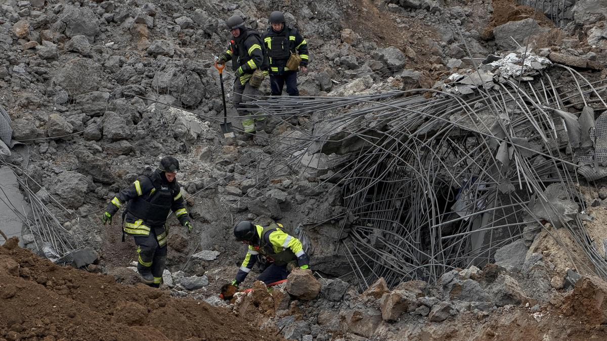

Russian attacks disrupt power in Kyiv, while the death toll in a stricken village rises to 40
Russian attacks disrupt power in Kyiv, while the death toll in a stricken village rises to 40 AP News

Russian attacks disrupt power in Kyiv, while the death toll in a stricken village rises to 40 AP News
Belirli bir şey mi arıyorsunuz? Tüm haberlerde ara.